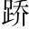

韓子韓非。曰：「儒以文亂法，而俠以武犯禁二句以儒、俠相提而論，借客形主。。」二者皆譏，而學士多稱於世雲側重儒一句，起下文。。至如以術取宰相、卿大夫，輔翼其世主，功名俱著於春秋術，巧詐也。春秋，國史。，固無可言者儒之偽者，誠不足言，起下次、憲。。及若季次、原憲公皙哀，字季次，亦孔子弟子。，閭巷人也閭巷之儒，照閭巷之俠。，讀書懷獨行君子之德，義不苟合當世，當世亦笑之。故季次、原憲終身空室蓬戶，褐衣疏食不厭。死而已四百餘年，而弟子志之不倦次、憲功名未著，而後世學者稱之。儒固自有真也，俠亦從可知矣。。今遊俠立氣勢作威福、結私交以立強於世者，謂之遊俠。，其行雖不軌於正義，然其言必信，其行必果，已諾必誠，不愛其軀，赴士之厄困，既已存亡死生矣亡者存之，死者生之。○句法。，而不矜其能，羞伐其德二句，俠士本領。，蓋亦有足多者焉稱遊俠一。。
且緩急，人之所時有也見遊俠不可無，接上生下，無限波瀾。。太史公曰：昔者虞舜窘於井廩，伊君負於鼎俎，傅說匿於傅險同「巖」。，呂尚困於棘津太公望，行年七十賣食棘津。，夷吾桎梏，百里飯牛，仲尼畏匡，菜色陳、蔡飢而食菜，則色病，故云菜色。。此皆學士所謂有道仁人也，猶然遭此菑同「災」。，況以中材而涉亂世之末流乎？其遇害何可勝升。道哉正見遊俠之不可無也。感嘆處，史公自道，故曲折悲憤。！
鄙人有言曰：「何知仁義，已同「以」。饗同「享」。其利者為有德享，受也。以受其利者為有德，何知有仁義也。○正應遭災涉亂，接下。。」故伯夷醜周，餓死首陽山，而文、武不以其故貶王伯夷未嘗許周以仁義，然享文、武之利者，不以伯夷醜周之故，而貶損其王號。；跖強入聲。暴戾，其徒誦義無窮柳跖、莊。由此觀之，「竊鉤者誅，竊國者侯；侯之門，仁義存」，皆大盜。其徒享其利，而誦義無窮。，非虛言也三句出《莊子·胠篋》篇。竊鉤之小，則為盜而受誅；竊國之大，則為侯而人享其利，故仁義存。。
今拘學或抱咫尺之義，久孤於世暗指季次輩。，豈若卑論儕柴。俗，與世浮沉而取榮名哉忽又嘆儒，皆有激之言也。！而布衣之徒指遊俠。，設取予、然諾，千里誦義，為死不顧世，此亦有所長，非苟而已也稱遊俠二。。故士窮窘而得委命，此豈非人之所謂賢豪間者邪士之窮窘，無所解免，皆得託命而望俠士之存亡死生，此誠人之所謂賢豪間者，而未可謂不得與儒齒也。○稱遊俠三。是史公為遊俠立傳本意。？誠使鄉曲之俠，予同「與」。季次、原憲比權量力，效功於當世，不同日而論矣俠以權力，儒以道德，不可同日而論。○綰合次、憲，略抑遊俠一筆，下即轉。。要以功見言信，俠客之義又曷可少哉稱遊俠四。○以上儒、俠夾寫，至此方歸本題。！
古布衣之俠，靡得而聞已布衣閭巷是主意，一有憑藉，便不足重。故下詳言之。。近世延陵吳季札也。季札豈遊俠耶？然史公作傳，既重遊俠矣，必援名人以尊之，若《貨殖傳》之援子貢也。、孟嘗齊田文。、春申楚黃歇。、平原趙勝。、信陵魏無忌。之徒又借五人引起。，皆因王者親屬，借於有土卿相之富厚，招天下賢者，顯名諸侯，不可謂不賢者矣。比如順風而呼，聲非加疾，其勢激也前有多少層折，方入本題。以為止矣，偏又翻出一層，落下「匹夫之俠」。。至如閭巷之俠，修行砥名，聲施於天下，莫不稱賢，是為難耳其義誠高，其事誠難。○稱遊俠五。。然儒、墨皆排擯不載儒與墨皆輕俠士，故不載。○又挽定「儒」字。。自秦以前，匹夫之俠，湮滅不見，餘甚恨之遙接「布衣之俠，靡得而聞」。○閭巷、布衣、匹夫之俠，是著意處。。以餘所聞，漢興有朱家、田仲、王公、劇孟、郭解之徒緊照延陵、孟嘗、春申、平原、信陵之徒，五賓五主。，雖時扞翰。當世之文罔同「網」。○謂犯當世之法禁。○應「以武犯禁」。，然其私義，廉潔退讓，有足稱者。名不虛立，士不虛附名實相副，而不虛立。士厄必濟，而不虛附。○稱遊俠六。。至如朋黨宗強，比周設財役貧，豪暴侵凌孤弱，恣欲自快，遊俠亦醜之至若引朋為黨，以強為宗，互相比周，施財以役乎貧民，恃其豪暴侵凌孤弱，恣欲以自快者，不特不可語遊俠，而遊俠亦醜之。○此言遊俠自有真偽，不可不辨。。餘悲世俗不察其意，而猥委。以朱家、郭解等令與豪暴之徒同類而共笑之也一往情深。。
世俗止知重儒而輕俠，以致俠士之義湮沒無聞。不知俠之真者，儒亦賴之，故史公特為作傳。此一傳之冒也。凡六贊遊俠，多少抑揚，多少往復。胸中犖落，筆底攄寫，極文心之妙。